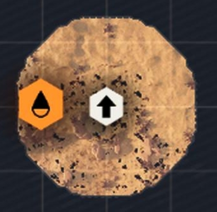
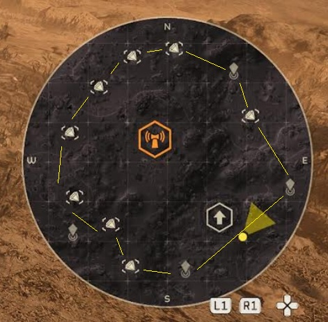

Refresh the app manually to fetch live data for budgetary reasons.
Hover over planets to see their name, biome, sector, and dangers.
You can hide unplayable planets with the planet button.
You can pin a biome to always show with the radio button.
The yellow dots indicate how lucrative a biome is for points of interest.
The existence of low yield biomes implies the existence of high yield biomes, and we can take some solace in that.
Explanation of the map:
Automaton Planet
Terminid Planet
Illuminate Planet
Planet Currently In Conflict
Hover over planets to see their Name, Sector, Biome, and type of danger.
Data and reasoning behind the yellow dots:
The basis of the yellow dot (hippo dot) system comes from Claysthetic's farming ranking:
OPEN THE FARMING MAPWe deem this a pretty fine empirical resource for farming overall.
However we made small changes based on farming out all of the currently available warbonds.
There are biomes that are more prone to give a 'perfect circle' of POIs given the right map conditions.
The more prone is a biome, the higher the dot ranking.
Further explanation of map conditions and how to farm on the next page.
How to effectively use this tool:
A good example of planets are Grand Errant and Phact Bay.
When you visit a higher yield system, you would like to start on a map that has few obstacles.
No water, cities, pits, anything that can obstruct the POIs or make them harder to get.
Best to go on Trivial difficulty, as patrols are low, and samples are not in containers blocking resources.
If you have picked a good map, the resources should line up in a 'perfect circle'.
